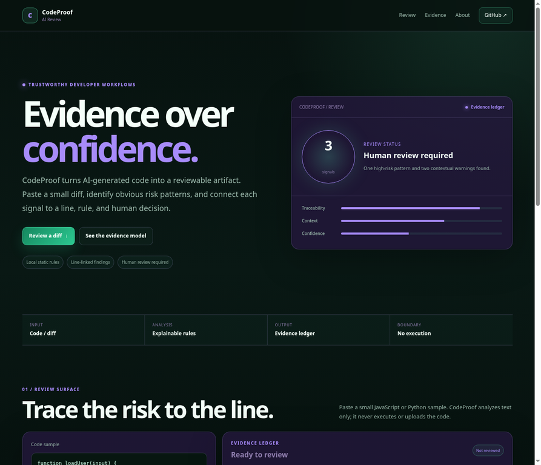
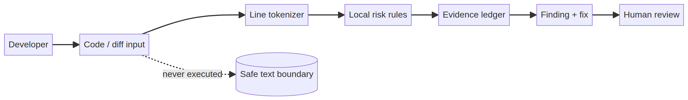

المستخدم الأساسي
المطورون وفرق المنصات والمدرسون الذين يريدون workflow مراجعة حول الكود المدعوم بالذكاء الاصطناعي.
CodeProof يحول الكود المولّد بالذكاء الاصطناعي إلى artifact قابل للمراجعة. يحدد السطر والقاعدة والخطر، ويترك قرار الموافقة النهائي للمراجع البشري.

يسرّع مساعد البرمجة مسودة الكود، لكنه لا يلغي مخاطر الأمن والصحة والصيانة. يحتاج المراجع إلى معرفة السطر الذي أطلق الإشارة وسبب أهميته وما الذي لم يتم التحقق منه بعد.
المطورون وفرق المنصات والمدرسون الذين يريدون workflow مراجعة حول الكود المدعوم بالذكاء الاصطناعي.
النتيجة دليل لاتخاذ القرار وليست حكمًا أمنيًا. الاختبارات والمراجعة البشرية جزء من المنتج.
| الجزء | التنفيذ | الهدف |
|---|---|---|
| حد آمن | تحليل نصي وتقسيم إلى أسطر | لا يتم تشغيل الكود في العرض العام. |
| قواعد المخاطر | الأسرار وeval والاستعلامات وحدود الشبكة | قواعد صغيرة يمكن شرحها ومراجعتها. |
| سجل الأدلة | الشدة والسطر والشرح والإصلاح | جعل المراجعة قابلة للتتبع. |
| البوابة البشرية | حالة صريحة تتطلب المراجعة | منع الإيحاء بالموافقة الآلية. |
يمر المسار من الإدخال إلى tokenizer ثم قواعد محلية ثم سجل أدلة ثم finding ثم مراجعة بشرية. لا توجد طبقة تنفيذ للكود في MVP.

العينة تحتوي قيمة سرية ودمج استعلام واستخدام eval. أنتج الاختبار المحلي 3 نتائج مرتبطة بالأسطر، منها إشارتان عاليتا الخطورة وتحذير واحد في الأسطر 2 و3 و4. هذه نتيجة fixture وليست شهادة أمان.
الحد: CodeProof ليس بديلًا عن SAST ولا يثبت أن الكود آمن.
استبدال regex بمحللات AST، إضافة dependency intelligence وSARIF وCI gates، وبناء sandbox مستقل لأي تنفيذ اختباري مع حوكمة واضحة.